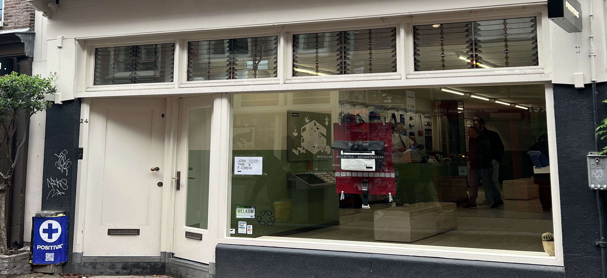
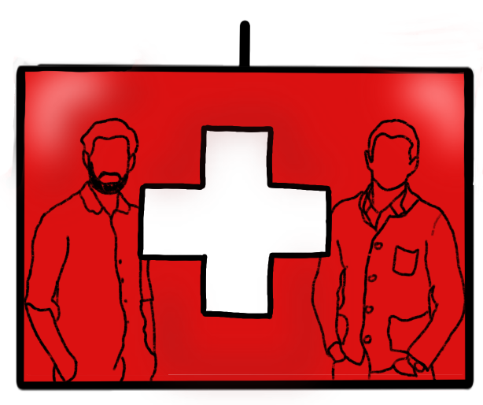

Winkelen is leuk, maar het kan ook schadelijk zijn voor de planeet. Overmatige consumptie leidt tot afval en vervuiling. Gelukkig zijn er manieren om duurzaam te shoppen. Kies voor producten gemaakt van gerecyclede materialen, vermijd wegwerpartikelen en ondersteun ethische bedrijven. Het is tijd om positieve verandering te omarmen.

Freitag, een uniek merk met een nog uniekere achtergrond, begon met het hergebruiken van vrachtwagenzeilen om stilvolle tassen te creëren. Vandaag de dag bliiven ze trouw aan hun duurzame roots, maar ze zin verder gegaan dan dat. Ontdek hoe Freitag evolveerde van gerecyclede tassen tot een voortrekker in duurzame mode met innovative materialen en een diepgaand engagement voor de planeet.
Achter het merk Freitag schuilen de getalenteerde broers Markus en Daniel Freitag. Deze creatieve geesten uit Zwitserland zijn de drijvende kracht achter de duurzame modebeweging. Hun verhaal begon in 1993 met een zoektocht naar duurzame mode en innovatieve materialen.
Freitag streeft naar trendy, hoogwaardige mode en accessoires met een duurzaam hart. Hun missie is om duurzaam winkelen te promoten, waarbij hergebruikte materialen en eerlijke arbeidspraktijken centraal staan. Ze zijn vastbesloten om afval te verminderen en de mode-industrie te veranderen. Samen maken ze duurzaamheid modieus!
Freitag droomt van een duurzame modewereld en wil anderen inspireren. Hun visie is eenvoudig: minder afval, milieuvriendelijke productie en eerlijke behandeling van mensen. Ze hopen dat hun succes anderen zal aanmoedigen om de weg van duurzaamheid te volgen, samen strevend naar een groenere en eerlijkere toekomst.